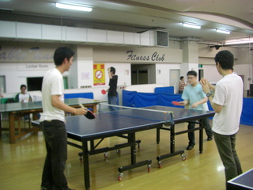

第2回乃村杯
作成者：三原 俊介
作成日：2009/5/13
-
日程:
-
2008年9月11日(木)
-
種目:
-
卓球
-
参加者:
-
乃村能成，小笠原良，栗原聖治，牛尾裕，岸壮暁，壇上正光，藤原啓輔
-
場所:
-
両備ボウル
大きな地図で見る
写真

結果
第一ゲーム
| 乃村 | 小笠原 | 栗原 | 牛尾 | 岸 | 壇上 | 藤原 | 勝利数 |
|---|
| 乃村 | | 6-11 | 2-11 | 7-11 | 11-3 | 11-6 | 11-6 | 3 |
|---|
| 小笠原 | 11-6 | | 11-8 | 11-3 | 11-5 | 11-4 | 11-4 | 6 |
|---|
| 栗原 | 11-2 | 8-11 | | 13-11 | 11-9 | 11-3 | 11-4 | 5 |
|---|
| 牛尾 | 11-7 | 3-11 | 11-3 | | 5-11 | 11-5 | 11-4 | 3 |
|---|
| 岸 | 3-11 | 5-11 | 9-11 | 11-5 | | 11-3 | 11-8 | 3 |
|---|
| 壇 | 6-11 | 4-11 | 3-11 | 5-11 | 3-11 | | 7-11 | 0 |
|---|
| 藤原 | 6-11 | 4-11 | 4-11 | 4-11 | 8-11 | 11-7 | | 1 |
|---|
第二ゲーム
| 乃村 | 小笠原 | 栗原 | 牛尾 | 岸 | 壇上 | 藤原 | 勝利数 |
|---|
| 乃村 | | 5-11 | 11-7 | 12-14 | 4-11 | 12-10 | 11-9 | 3 |
|---|
| 小笠原 | 11-5 | | 11-8 | 11-6 | 6-11 | 11-2 | 11-7 | 5 |
|---|
| 栗原 | 7-11 | 8-11 | | 9-11 | 11-9 | 11-8 | 11-3 | 3 |
|---|
| 牛尾 | 14-12 | 6-11 | 11-9 | | 3-11 | 11-5 | 11-3 | 4 |
|---|
| 岸 | 11-4 | 11-6 | 9-11 | 11-3 | | 11-3 | 11-8 | 5 |
|---|
| 檀上 | 10-12 | 2-11 | 8-11 | 5-11 | 3-11 | | 2-11 | 0 |
|---|
| 藤原 | 9-11 | 7-11 | 3-11 | 3-11 | 8-11 | 11-2 | | 1 |
|---|
合計
| 順位 | 名前 | 合計勝利数 |
|---|
| 1 | 小笠原 | 11 |
|---|
| 2 | 栗原 | 8 |
|---|
| 2 | 岸 | 8 |
|---|
| 4 | 牛尾 | 7 |
|---|
| 5 | 乃村 | 6 |
|---|
| 6 | 藤原 | 2 |
|---|
| 7 | 壇上 | 0 |
|---|